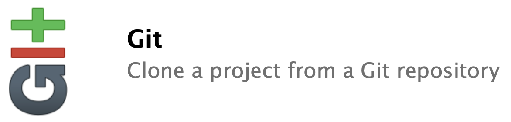
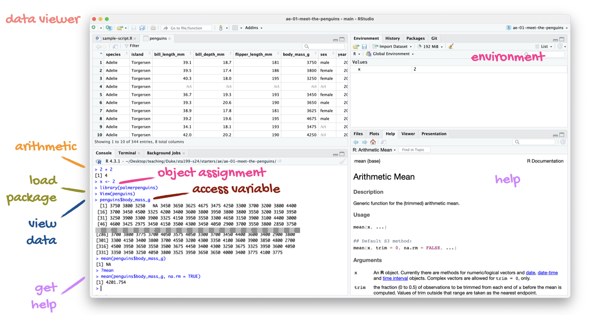
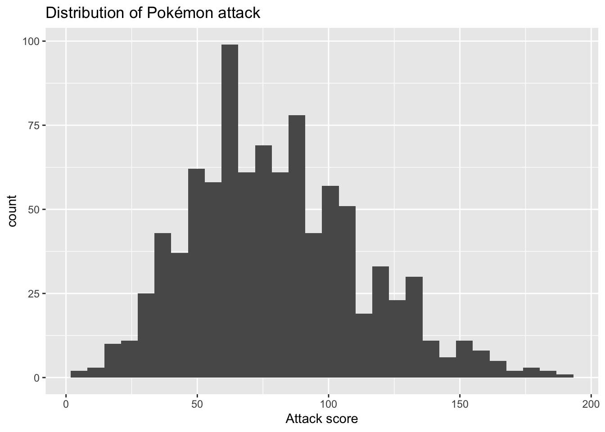
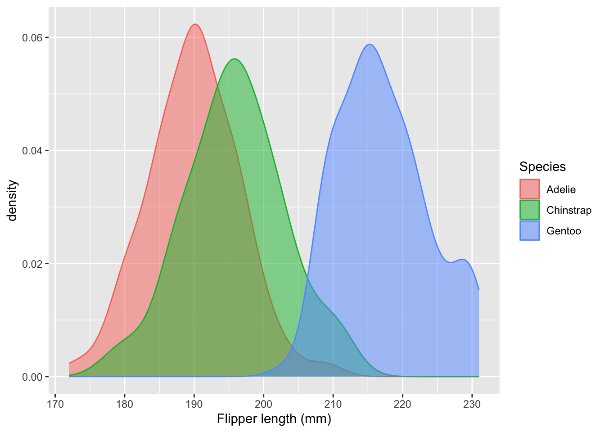

2 + 2[1] 42 * 3[1] 6sqrt(9)[1] 3This lab serves as a “one-stop shop” for the basic coding skills we will need in STA 101. We will practice this stuff daily, and if you master the basic building blocks, you’ll be sitting pretty. Everything else in the class is essentially variations on a theme.
We’re not grading today’s activity. Just follow along with the TA and ask a million questions.
First, we’ve gotta get the car out of the garage. In this class, we will always and everywhere access RStudio through the Duke Container Manager. I assure you it makes everyone’s life easier. So please do the following:
Go here: https://cmgr.oit.duke.edu/containers. You may have to log in with your NetID at some point;
(The first time you do this, you look for STA101 under “Reservations available” on the righthand side, and click “reserve STA101”. After you do that once, STA101 will appear under “My reservations” on the lefthand side forever more)
Click STA101 under “My reservations”;
Login;
Start. It may take a while (let the spinning wheel do its thing), but then RStudio should launch in your browser.
Please double check that you have reserved the STA101 container and not something else.
We should only have to do this once at the beginning of the semester, and then it will serve us for the remainder of term.
I now ask you to connect your container to a file management system that I will use. There are a few steps here, but once it’s done, you just have to sit back while I broadcast the course files to you throughout the semester.
Please do the following:
 in the upper right;
in the upper right; in the drop-down menu;
in the drop-down menu; in the dialog box;
in the dialog box;
in the dialog box;sta101-f26-files
The file management system I am using is Git and GitHub. It’s great, and it’s widely used in professional data science. If you were taking 199, we would teach you how to use this system yourself. In 101, we skip this, and in exchange go deeper on statistical inference topics. So, if you’re still on the fence between the two, that’s one of the concrete differences.
R is a programming language that statisticians created to make their work easier. If you learn to “speak” this language, you can instruct a computer to perform data analysis tasks that would be tedious to perform by hand. RStudio is a convenient interface that allows you to use R in a clean and organized way. If R is the engine, then RStudio is the dashboard.
When you open your container and launch RStudio in your browser, you should see something like this:

There are four panes:
Quarto is a technical publishing system that allows you to write documents where text, math, code, and the output of that code are seamlessly integrated in a reproducible way. Quarto is baller. I had never used it before coming to Duke, and now I am obsessed. I use it to create all of the course materials, including this entire website. Similarly, you will use Quarto for all of your work in this class: lab, homework, lecture activities, and the project.
Here’s what it looks like when I use Quarto inside RStudio:

In the upper left, I have the editor open, and I’m working on a .qmd file. This is just a text file with a special format. When I’m done editing, I hit the Render button (circled in red), and if there are no errors, a nice .pdf file is produced, either in the Viewer tab in the bottom right or in a new tab in my browser.
That’s pretty much the whole ballgame:
Edit the
.qmdfile → hit Render → get a
Alright, so what goes in the .qmd file?
---, you have the document’s metadata: title, author, date, and so forth. We are not going to get fancy with it, but there are loads of settings you can play with;```{r} and ending with ``` is called a code chunk. Chunks of code go in there. In the rendered document, the code will be nicely formatted and stylized amidst the text;Firstly, Excel is not cute, which should bother all of us. But more importantly, work in Excel can be very difficult to reproduce, which will be an important consideration for us. If you’ve ever been unfortunate enough to inherit an Excel spreadsheet from someone else (especially one littered with hidden formulas inside random cells), it can be very difficult to understand what was done, why it was done, what order it was done in, and whether or not it’s correct. Even if it’s a spreadsheet you created, if you step away from it for a while, you might return and wonder “wait, how did I do this again?” This is no good.
Code is different. It’s just a sequence of written instructions, one after another. You can read the code from top to bottom and see with the naked eye what was done and in what order. Furthermore, when you augment this with a system like Quarto, it’s easy to place next to the code detailed written explanations of why you did what you did. This is a much better way to work, and professional data analysis increasingly relies on code.
The R programming language comes with several built-in commands. For instance, you can navigate to the console and use R like an overgrown calculator:
However, there will be extra tasks we need R to perform that are not built-in. To perform these tasks, folks have developed “expansion packs” for R called packages that contain extra commands. If you want to use those commands, you have to load the package, like this:
The tidyverse is the package we will use most often. In fact, tidyverse is really a “meta-package” that bundles many smaller packages that we will use:
ggplot2 provides tools for data visualization;dplyr provides tools for data transformation and summarization;readr provides tools for actually loading datasets into R.We will introduce a few more packages as the semester wears on (ie. tidymodels), and you may find that you need yet more if the dataset you choose for your final project poses special challenges. But never fear. At the end of the day, a package is just a bundle of new commands that give R extra functionality.
For each document you work on, you only have to load the packages once at the very top.
For us, a dataset will typically look like a spreadsheet: a big ol’ box of values arranged in rows and columns. More on that shortly. But how do you actually get a hold of one? For us, there will be two methods.
Some packages include datasets in the bundle of new stuff they provide, so if you load the package, you get the data. For instance, this package contains a dataset on penguins:
Once you load the package, you gain access to an object called penguins. It’s a lil’ spreadsheet where every row is a penguin, and the columns record various biometric measurements about that penguin:
penguins# A tibble: 344 × 8
species island bill_length_mm bill_depth_mm flipper_length_mm body_mass_g
<fct> <fct> <dbl> <dbl> <int> <int>
1 Adelie Torgersen 39.1 18.7 181 3750
2 Adelie Torgersen 39.5 17.4 186 3800
3 Adelie Torgersen 40.3 18 195 3250
4 Adelie Torgersen NA NA NA NA
5 Adelie Torgersen 36.7 19.3 193 3450
6 Adelie Torgersen 39.3 20.6 190 3650
7 Adelie Torgersen 38.9 17.8 181 3625
8 Adelie Torgersen 39.2 19.6 195 4675
9 Adelie Torgersen 34.1 18.1 193 3475
10 Adelie Torgersen 42 20.2 190 4250
# ℹ 334 more rows
# ℹ 2 more variables: sex <fct>, year <int>More frequently though, we will load in a dataset from a file. That is, we have a data file on our computer (or in our container), and we want to tell R “hey, go get that.” The file type we will encounter most often is a comma-separated value (csv) file. If you have such a file in the data folder on your computer, you can instruct R to retrieve it like so:
pokemon <- read_csv("data/pokemon.csv")read_csv is a command included in tidyverse. You supply that command with the location of your data file, and the file is read into R. In this, it’s a dataset on Pokémon. Each row is a different creature, and the columns record their various specifications:
pokemon# A tibble: 924 × 17
name generation type_1 type_2 height_m weight_kg total_points hp attack
<chr> <dbl> <chr> <chr> <dbl> <dbl> <dbl> <dbl> <dbl>
1 Bulbas… 1 Grass Poison 0.7 6.9 318 45 49
2 Ivysaur 1 Grass Poison 1 13 405 60 62
3 Venusa… 1 Grass Poison 2 100 525 80 82
4 Mega V… 1 Grass Poison 2.4 156. 625 80 100
5 Charma… 1 Fire <NA> 0.6 8.5 309 39 52
6 Charme… 1 Fire <NA> 1.1 19 405 58 64
7 Chariz… 1 Fire Flying 1.7 90.5 534 78 84
8 Mega C… 1 Fire Dragon 1.7 110. 634 78 130
9 Mega C… 1 Fire Flying 1.7 100. 634 78 104
10 Squirt… 1 Water <NA> 0.5 9 314 44 48
# ℹ 914 more rows
# ℹ 8 more variables: defense <dbl>, sp_attack <dbl>, sp_defense <dbl>,
# speed <dbl>, catch_rate <dbl>, base_friendship <dbl>,
# base_experience <dbl>, is_legendary <lgl>In the above example, you saw a line of code that looked like this:
x <- 2This is called variable assignment. The idea is that you have some object that you want to save and store for later. So on the right-hand side, you have the thing you want to store. On the left-hand side, you have the name you want to give it so you can refer to it later. In the middle, you have the assignment operator <-. We will use this all the time.
Note: to the left of the assignment operator is the variable name you are attaching to the object you wish to save. In general, you can give it whatever name you choose, but there are some guidelines and ground rules:
third little pig would not work, but third_little_pig is great;& or % and so on. Only letters, numbers, and underscores (_). But the name cannot begin with a number, so 3rd_little_pig is no good;tdfhgjhk. However, it’s not useful. Pick names that are concise and explicit about what the object actually is. penguins and pokemon are good names because the datasets are about…penguins and pokemon!penguins and pokemon are examples of data frames. This is basically R’s version of a spreadsheet. It’s got rows, and it’s got columns. Behold:
penguins# A tibble: 344 × 8
species island bill_length_mm bill_depth_mm flipper_length_mm body_mass_g
<fct> <fct> <dbl> <dbl> <int> <int>
1 Adelie Torgersen 39.1 18.7 181 3750
2 Adelie Torgersen 39.5 17.4 186 3800
3 Adelie Torgersen 40.3 18 195 3250
4 Adelie Torgersen NA NA NA NA
5 Adelie Torgersen 36.7 19.3 193 3450
6 Adelie Torgersen 39.3 20.6 190 3650
7 Adelie Torgersen 38.9 17.8 181 3625
8 Adelie Torgersen 39.2 19.6 195 4675
9 Adelie Torgersen 34.1 18.1 193 3475
10 Adelie Torgersen 42 20.2 190 4250
# ℹ 334 more rows
# ℹ 2 more variables: sex <fct>, year <int>pokemon# A tibble: 924 × 17
name generation type_1 type_2 height_m weight_kg total_points hp attack
<chr> <dbl> <chr> <chr> <dbl> <dbl> <dbl> <dbl> <dbl>
1 Bulbas… 1 Grass Poison 0.7 6.9 318 45 49
2 Ivysaur 1 Grass Poison 1 13 405 60 62
3 Venusa… 1 Grass Poison 2 100 525 80 82
4 Mega V… 1 Grass Poison 2.4 156. 625 80 100
5 Charma… 1 Fire <NA> 0.6 8.5 309 39 52
6 Charme… 1 Fire <NA> 1.1 19 405 58 64
7 Chariz… 1 Fire Flying 1.7 90.5 534 78 84
8 Mega C… 1 Fire Dragon 1.7 110. 634 78 130
9 Mega C… 1 Fire Flying 1.7 100. 634 78 104
10 Squirt… 1 Water <NA> 0.5 9 314 44 48
# ℹ 914 more rows
# ℹ 8 more variables: defense <dbl>, sp_attack <dbl>, sp_defense <dbl>,
# speed <dbl>, catch_rate <dbl>, base_friendship <dbl>,
# base_experience <dbl>, is_legendary <lgl>If you want to know how many rows or columns, there are commands for that:
The rows in a data frame are the observations. Each row in pokemon corresponds to a different Pokémon, and each row in penguins refers to a different penguin. The columns in a data frame are the variables. Each column is a separate piece of information that we recorded for each observation. Variables come in different types, which we will learn to work with. The two main types are numerical and categorical. In penguins for example, one piece of information we have for each penguin is the length of its bill in millimeters. This is recorded as a number:
penguins$bill_length_mm[1] 39.1 39.5 40.3 NA 36.7 39.3Another piece of information we have for each penguin is what species it belongs to. There are three options, and so the species variable is a piece of text recording which category the penguin belongs to:
penguins$species[1] Adelie Adelie Adelie Adelie Adelie Adelie
Levels: Adelie Chinstrap GentooDepending on the type of a variable, we will have different guidelines for how to visualize and summarize that information.
We use ggplot2 (included in the tidyverse) for data visualization.
For instance, if we wish to visualize the distribution of the numeric variable attack in the pokemon dataset, we can do that with a histogram:
ggplot(pokemon, aes(x = attack)) +
geom_histogram() +
labs(
x = "Attack score",
title = "Distribution of Pokémon attack"
)
From the plot, we can conclude that most attack scores are concentrated between 50 and 100, and the distribution is slightly right-skewed.
An alternative visualization for a distribution is a density plot. It’s like a “smoothed out” histogram. Imagine draping a noodle or a piece of silk over the top of the histogram. You’ll get a nice curve that smooths over the blocky nooks and crannies. If we wanted to use this to visualize the distribution of flipper lengths for the penguins, but we wanted to distinguish the flipper lengths of different species, we could run this:
ggplot(penguins, aes(x = flipper_length_mm, fill = species, color = species)) +
geom_density(alpha = 0.5) +
labs(
x = "Flipper length (mm)",
fill = "Species",
color = "Species"
)
From the plot, we can conclude that Gentoo penguins have systematically longer flippers than Adelie or Chinstrap, and Chinstrap penguins tend to have slightly longer flippers than Adelie penguins.
These are two simple examples of two specific visualizations (histogram and density), but the format of the code will be the same when we try to do other things. You are building up the plot bit-by-bit by stacking up layers. Here’s the template:
ggplot(df, aes(...)): It always starts here. You provide the name of the data frame you are using, as well as an aesthetic mapping where you tell R what variables you want to use and how you want to use them. In the second example above, we had x = flipper_length_mm because we wanted that variable on the horizontal axis, and we had color = species because we wanted that variable to control the color of the curves;geom_XXX: this is where we tell it what kind of plot we want. So far we have geom_histogram and geom_density, but there is also geom_point for scatter plots, geom_bar for bar charts, and many more;labs to give the plot human-readable labels. This is something you should always be in the habit of doing. If you do not, the computer defaults to using the variable names as the labels, but “Flipper length (mm)” is more readable than flipper_length_mm. You wouldn’t see the second in The New York Times.If building a dataviz with ggplot is like building a cake, where each plot element is a layer of sponge, then the plus signs in between are like the icing. You’ve gotta have that icing. Nobody needs two slabs of dry sponge rubbing up against one another. We’re not animals.
Having said that, the following mistake is guaranteed to happen to all of us (JZ and TAs included) at some point this semester:
ggplot(pokemon, aes(x = attack, y = defense))
geom_point() +
labs(
x = "Attack score",
x = "Defense score",
title = "How are a Pokémon's attack and defense related?"
)Error:
! Cannot add <ggproto> objects together.
ℹ Did you forget to add this object to a <ggplot> object?We got an error because there is not plus sign between the first line and the second. It happens to the best of us, but pay attention!
We use dplyr (included in the tidyverse) and the pipe operator |> for data summarization and transformation.
For instance, if we want to know what the average HP (hit points) for each type of Pokémon is, we can run:
# A tibble: 18 × 2
type_1 avg_hp
<chr> <dbl>
1 Bug 57.5
2 Electric 61.1
3 Ghost 64.9
4 Rock 66.2
5 Grass 66.7
6 Steel 66.8
7 Poison 67.3
8 Fire 69.5
9 Dark 69.6
10 Ice 70.5
11 Flying 70.8
12 Water 71.1
13 Ground 71.6
14 Fighting 71.6
15 Fairy 72.8
16 Psychic 73.7
17 Normal 77.1
18 Dragon 84.1If we want to know what proportion of our penguins belong to each species, we can run:
# A tibble: 3 × 3
species n prop
<fct> <int> <dbl>
1 Adelie 152 0.442
2 Chinstrap 68 0.198
3 Gentoo 124 0.360Commands to keep in your back pocket:
group_by: make a data frame grouped according to the levels of one of its variables. All subsequent operations will be done within the groups;summarize: takes a data frame and creates a new data frame containing summaries of the old one;mean: compute the average of a set of numbers;arrange: this command sorts a data frame from low to high or high to low according to the values in one of its columns;count: count how many observations fall into each level of a categorical variable;mutate: add a new column to a data frame or modify an existing column;sum: add up a set of numbers.|>
The pipe operator is the engine that drives data pipelines. The operator takes the stuff to its left and feeds it forward to the stuff on its right. That’s it. But if you link many of these together in sequence, you can perform possibly elaborate summaries and transformations in a clean, step-by-step way.
Simple example: if I want to add the numbers 1 and 2, I can run:
sum(1, 2)[1] 3An alternative but equivalent way of writing this is with the pipe operator:
1 |> sum(2)[1] 3So the number 1 appears on the left, and it gets fed forward as the first argument to the command on the right. That’s the main idea. The power of the pipe operator is that it can make code much more readable. Consider the second example above where we compute the proportion of penguins belonging to each species. This code is equivalent to what we wrote above, and it does exactly the same thing:
# A tibble: 3 × 3
species n prop
<fct> <int> <dbl>
1 Adelie 152 0.442
2 Chinstrap 68 0.198
3 Gentoo 124 0.360But it’s much more cramped and difficult to read. The pipe operator allows us to lay everything out in a linear, step-by-step fashion: first this happened, then this happened, then this happened, etc.
Code is a language, and it has its own syntax, grammar, and style, just like written language does. YouwOUldntwriTeanenglishsenteNceliKethisANDexpeCtpeopletOtolerateit. If you had to inform Claude Debussy that you left your vacuum cleaner at the airport, you wouldn’t text “J’ai oublie mon aspirateur a l’aeroport” and expect to be taken seriously in the halls of Versailles. You would say “J’ai oublié mon aspirateur à l’aéroport.”
As such, when you write R code, you should pay attention to your style. The tidyverse has a whole style guide that you can refer to, but here are some highlights:
+ when building a ggplot;|> in a data transformation pipeline;= signs and spaces after commas;All of the code that we on the teaching team present to you will follow the style guidelines, and all of the code you submit must also follow them if you wish to receive full credit. Even if your code is otherwise perfectly correct and generates the correct answer, you will lose points if it is ugly or difficult to read. Keep it cute.
If you have not done so already, please complete the Getting to Know You Survey!